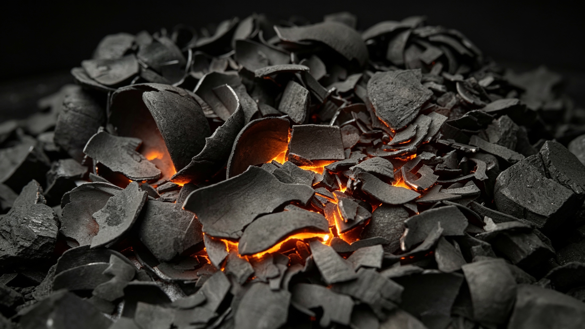

Katalog Komoditas & Parameter Mutu
Berikut adalah standar parameter kualifikasi (Certificate of Analysis & SNI) untuk setiap komoditas yang kami terima dan kami perdagangkan.

Minyak Jelantah (Used Cooking Oil / UCO)
Bahan baku esensial untuk produksi energi terbarukan Biodiesel (FAME/HVO) dan Sustainable Aviation Fuel (SAF). Kami menampung pasokan dan memprosesnya melalui penyaringan ketat untuk menekan kadar air dan kotoran.
| Parameter Uji Industri | Kualifikasi Maksimal / Target |
|---|---|
| Free Fatty Acid (FFA) | Maksimal 5.0% |
| Moisture & Impurities (MIU) | Maksimal 2.0% |
| Iodine Value (IV) | Minimal 50 g I2/100g |
| Sistem Logistik Pemuatan | Truk Tangki (Domestik) / Flexitank (Ekspor) |
Serbuk Kayu & Wood Chip (Kayu Cacah)
Biomassa padat yang kami terima langsung dari lini penggergajian kayu murni. Bahan baku vital untuk industri pembuat Wood Pellet, Briket, dan media tanam jamur. Kami sangat ketat dalam menjamin kemurnian material.
| Parameter Mutu Dasar | Standard Limits / Kualifikasi Target |
|---|---|
| Moisture (Kadar Air) | Di Bawah 20% |
| Purity (Kemurnian Asal) | 100% Kayu Murni (Virgin Wood) |
| Contamination (Kontaminasi) | Bersih dari paku, plastik, dan bahan lem kimia MDF |


Arang Batok Kelapa (Charcoal)
Arang premium hasil pembakaran terkontrol. Kami memperdagangkan arang dengan spesifikasi teknis ketat untuk memenuhi standar SNI Briket Ekspor (kebutuhan Shisha & BBQ). Menghasilkan daya bakar tahan lama, tanpa asap, dan tanpa percikan.
| Parameter Laboratorium & SNI | Standar Mutu Target |
|---|---|
| Moisture (Kadar Air) | Maksimal 5% - 8% |
| Ash Content (Kadar Abu) | Di bawah 2% - 3% |
| Volatile Matter (Zat Menguap) | Maksimal 15% - 20% |
| Gross Calorific Value (Nilai Kalor) | Minimal 6.500 - 7.000 kal/gram |
Batok Kelapa (Coconut Shell)
Batok kelapa tua berkualitas prima yang disiapkan khusus untuk pembakaran efisien di boiler industri maupun sebagai bahan dasar pembuatan karbon aktif. Kami hanya menerima dan menjual batok dengan kualitas kebersihan fisik yang tinggi.
Kondisi Fisik
Kering Sempurna
Tingkat Kebersihan
Bersih dari Serabut